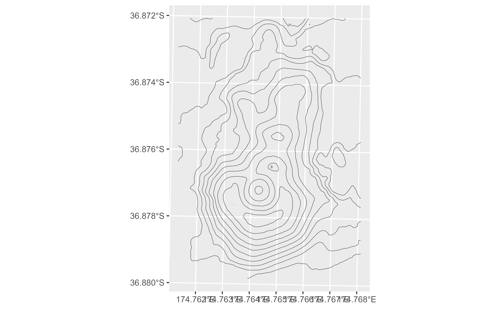
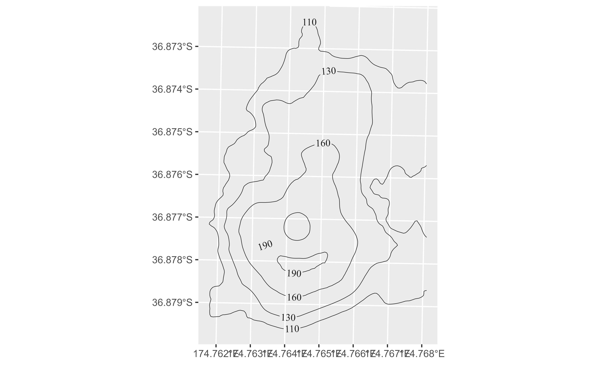
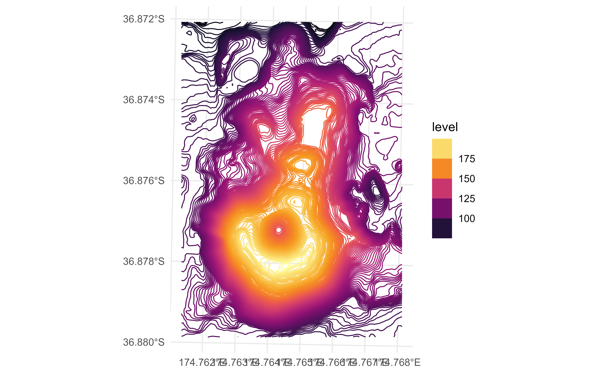

Plot SpatRaster contours
Source: R/geom_spat_contour.R, R/geom_spat_contour_text.R, R/geom_spat_contour_fill.R
geom_spat_contour.RdThese geoms create contours of SpatRaster objects. To specify a valid
surface, you should specify the layer on aes(z = layer_name), otherwise all
the layers would be consider for creating contours. See also Facets
section.
The underlying implementation is based on ggplot2::geom_contour().
![[Experimental]](figures/lifecycle-experimental.svg)
geom_spatraster_contour_text() creates
labeled contours and it is implemented on top of isoband::isolines_grob().
Usage
geom_spatraster_contour(
mapping = NULL,
data,
...,
maxcell = 5e+05,
bins = NULL,
binwidth = NULL,
breaks = NULL,
na.rm = TRUE,
show.legend = NA,
inherit.aes = TRUE,
mask_projection = FALSE
)
geom_spatraster_contour_text(
mapping = NULL,
data,
...,
maxcell = 5e+05,
bins = NULL,
binwidth = NULL,
breaks = NULL,
size.unit = "mm",
label_format = scales::label_number(),
label_placer = isoband::label_placer_minmax(),
na.rm = TRUE,
show.legend = NA,
inherit.aes = TRUE,
mask_projection = FALSE
)
geom_spatraster_contour_filled(
mapping = NULL,
data,
...,
maxcell = 5e+05,
bins = NULL,
binwidth = NULL,
breaks = NULL,
na.rm = TRUE,
show.legend = NA,
inherit.aes = TRUE,
mask_projection = FALSE
)Arguments
- mapping
Set of aesthetic mappings created by
ggplot2::aes(). See Aesthetics specially in the use offillaesthetic.- data
A
SpatRasterobject.- ...
Other arguments passed on to
layer()'sparamsargument. These arguments broadly fall into one of 4 categories below. Notably, further arguments to thepositionargument, or aesthetics that are required can not be passed through.... Unknown arguments that are not part of the 4 categories below are ignored.Static aesthetics that are not mapped to a scale, but are at a fixed value and apply to the layer as a whole. For example,
colour = "red"orlinewidth = 3. The geom's documentation has an Aesthetics section that lists the available options. The 'required' aesthetics cannot be passed on to theparams. Please note that while passing unmapped aesthetics as vectors is technically possible, the order and required length is not guaranteed to be parallel to the input data.When constructing a layer using a
stat_*()function, the...argument can be used to pass on parameters to thegeompart of the layer. An example of this isstat_density(geom = "area", outline.type = "both"). The geom's documentation lists which parameters it can accept.Inversely, when constructing a layer using a
geom_*()function, the...argument can be used to pass on parameters to thestatpart of the layer. An example of this isgeom_area(stat = "density", adjust = 0.5). The stat's documentation lists which parameters it can accept.The
key_glyphargument oflayer()may also be passed on through.... This can be one of the functions described as key glyphs, to change the display of the layer in the legend.
- maxcell
positive integer. Maximum number of cells to use for the plot.
- bins
Number of contour bins. Overridden by
breaks.- binwidth
The width of the contour bins. Overridden by
bins.- breaks
One of:
Numeric vector to set the contour breaks
A function that takes the range of the data and binwidth as input and returns breaks as output. A function can be created from a formula (e.g. ~ fullseq(.x, .y)).
Overrides
binwidthandbins. By default, this is a vector of length ten withpretty()breaks.- na.rm
If
TRUE, the default, missing values are silently removed. IfFALSE, missing values are removed with a warning.- show.legend
logical. Should this layer be included in the legends?
NA, the default, includes if any aesthetics are mapped.FALSEnever includes, andTRUEalways includes. It can also be a named logical vector to finely select the aesthetics to display.- inherit.aes
If
FALSE, overrides the default aesthetics, rather than combining with them.- mask_projection
logical, defaults to
FALSE. IfTRUE, mask out areas outside the input extent. For example, to avoid data wrapping around the date-line in Equal Area projections. This parameter is passed toterra::project()when reprojecting theSpatRaster.- size.unit
How the
sizeaesthetic is interpreted: as millimetres ("mm", default), points ("pt"), centimetres ("cm"), inches ("in"), or picas ("pc").- label_format
One of:
NULLfor no labels. This produced the same result thangeom_spatraster_contour().A character vector giving labels (must be same length as the breaks produced by
bins,binwidth, orbreaks).A function that takes the breaks as input and returns labels as output, as the default setup (
scales::label_number()).
- label_placer
Function that controls how labels are placed along the isolines. Uses
label_placer_minmax()by default.
Value
A ggplot2 layer
terra equivalent
Aesthetics
geom_spatraster_contour() / geom_spatraster_contour_text() understands
the following aesthetics:
linewidthgeom_spatraster_contour_text()understands also:labelfamilyfontface
Additionally, geom_spatraster_contour_filled() understands also the
following aesthetics, as well as the ones listed above:
subgroup
Check ggplot2::geom_contour() for more info on contours and
vignette("ggplot2-specs", package = "ggplot2") for an overview of the
aesthetics.
Computed variables
These geom computes internally some variables that are available for use as
aesthetics, using (for example) aes(color = after_stat(<computed>)) (see
ggplot2::after_stat()).
after_stat(lyr): Name of the layer.after_stat(level): Height of contour. For contour lines, this is numeric vector that represents bin boundaries. For contour bands, this is an ordered factor that represents bin ranges.after_stat(nlevel): Height of contour, scaled to maximum of 1.after_stat(level_low),after_stat(level_high),after_stat(level_mid): (contour bands only) Lower and upper bin boundaries for each band, as well the mid point between the boundaries.
Dropped variables
z: After contouring, thezvalues of individual data points are no longer available.
Coords
When the SpatRaster does not present a crs (i.e.,
terra::crs(rast) == "") the geom does not make any assumption on the
scales.
On SpatRaster that have a crs, the geom uses ggplot2::coord_sf() to
adjust the scales. That means that also the
SpatRaster may be reprojected.
Facets
You can use facet_wrap(~lyr) for creating a faceted plot by each layer of
the SpatRaster object. See ggplot2::facet_wrap() for details.
See also
The metR package also provides a set of alternative functions:
Other ggplot2 utils:
autoplot.Spat,
fortify.Spat,
geom_spatraster(),
geom_spatraster_rgb(),
ggspatvector,
stat_spat_coordinates()
Examples
# \donttest{
library(terra)
# Raster
f <- system.file("extdata/volcano2.tif", package = "tidyterra")
r <- rast(f)
library(ggplot2)
ggplot() +
geom_spatraster_contour(data = r)

# Labelled
ggplot() +
geom_spatraster_contour_text(
data = r, breaks = c(110, 130, 160, 190),
color = "grey10", family = "serif"
)

ggplot() +
geom_spatraster_contour(
data = r, aes(color = after_stat(level)),
binwidth = 1,
linewidth = 0.4
) +
scale_color_gradientn(
colours = hcl.colors(20, "Inferno"),
guide = guide_coloursteps()
) +
theme_minimal()

# Filled with breaks
ggplot() +
geom_spatraster_contour_filled(data = r, breaks = seq(80, 200, 10)) +
scale_fill_hypso_d()
# Both lines and contours
ggplot() +
geom_spatraster_contour_filled(
data = r, breaks = seq(80, 200, 10),
alpha = .7
) +
geom_spatraster_contour(
data = r, breaks = seq(80, 200, 2.5),
color = "grey30",
linewidth = 0.1
) +
scale_fill_hypso_d()
# }